Locații de nuntă în județul Vâlcea
- locații în director
- 25
- cu cazare în registrul SITUR
- 7
- medie ponderată Google
- 4,3 / 5
- evaluări Google
- 21.533
Cum alegi unde mergi la vizionare
În zona Călimănești și Căciulata puteți discuta împreună despre petrecere și cazare. În Râmnicu Vâlcea, o vizionare poate porni de la accesul invitaților locali. Pentru o terasă de hotel întrebați dacă micul dejun sau serviciul obișnuit al restaurantului îi schimbă programul de montaj.
Pentru locația Castel din Râmnicu Vâlcea, vizitatorii amintesc terasa și parcarea proprie. Dacă vă gândiți la primirea cu un pahar afară, parcurgeți drumul de la mașină la terasă cu florile sau bagajele pe care le-ar avea un invitat. În Căciulata puteți face apoi aceeași probă de la camere la ceremonie. Veți observa repede dacă veți avea nevoie de indicatoare.
Două adrese pentru o zi de vizionări
Pe hartă, între aceste două proprietăți sunt 5,2 km în linie dreaptă. Deschide indicațiile de drum din fișe ca să vezi traseul pe șosea înainte de a stabili a doua întâlnire.
- Conacul Malul Alb, vila turistica 5 stele · Strada Dealu Malului 76H, 240424 Dealu Malului
- Pensiunea Denisa · Strada Ostroveni 99, 240030 Râmnicu Vâlcea
Explorează după localitate
Toate locațiile din județul Vâlcea
Ordinea ține cont de nota Google și de numărul evaluărilor. Cum calculăm ordinea
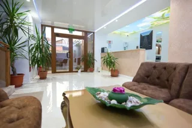
Fotografie a locației · Sursa fotografiei Drăgășani · Pensiune
Pensiunea "Avântul SCM"
Pensiunea "Avântul SCM", Drăgășani. Dimineața la Avântul SCM i-a rămas în minte unui client pentru cafea și pentru lumina din camere.
Strada Decebal 25, 245700 Drăgășani+40 736 061 120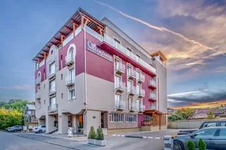
Fotografie a locației · Sursa fotografiei Râmnicu Vâlcea · Hotel
Simfonia Boutique Hotel
Simfonia Boutique Hotel, Râmnicu Vâlcea. Clădirea cu balcoane are intrarea în apropierea unei zone de staționare.
Strada George Enescu 42-44, 240118 Râmnicu Vâlcea+40 737 577 606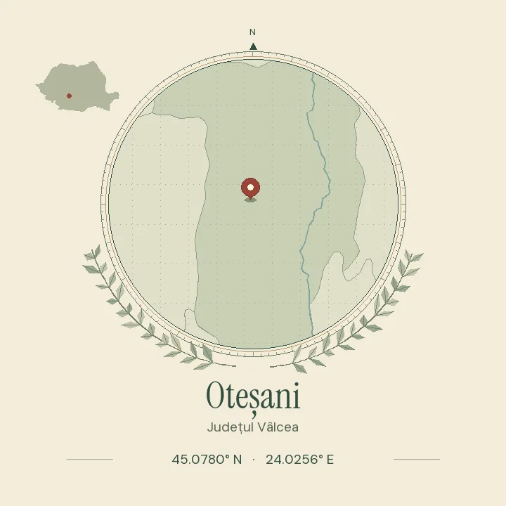
Hartă ilustrată Oteșani · Hotel
Conacul Frumuselu
Conac în Oteșani, Vâlcea, cu saună, ciubăr și terasă din lemn, nota 4,9. Pentru grupuri mici; capacitatea trebuie aflată de la gazde.
DC116, 247455 Oteşani+40 745 634 195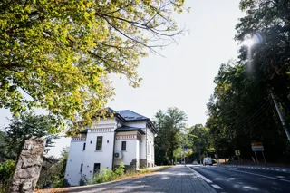
Fotografie a locației · Sursa fotografiei Călimănești · Pensiune
Bujorul Oltului
Conac din 1934 transformat în pensiune la Călimănești, cu vedere spre Olt, foișor și terasă separată; notă 5 din 25 de evaluări pe Google.
Calea lui Traian 554, 245600 Călimănești+40 753 338 508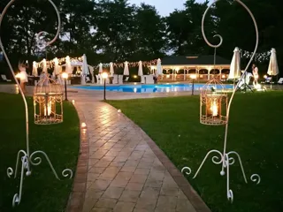
Fotografie a locației · Sursa fotografiei Măldărești · Hotel
Conacul lui Maldăr
Conac tradițional în Măldărești, Vâlcea, cu grădină, piscină și camere tematice. Ce spun invitații de la petreceri și cum evitați costurile neprevăzute.
Strada Bela nr. 3, 247370 Măldăreşti+40 758 222 929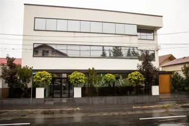
Fotografie a locației · Sursa fotografiei Râmnicu Vâlcea · Hotel
NOVO BOUTIQUE
La Novo Boutique, un client descrie intrarea în cameră cu ajutorul unui cod, fără să folosească o cheie sau un card.
Strada Bogdan Amaru 11, 240408 Râmnicu Vâlcea+40 744 734 684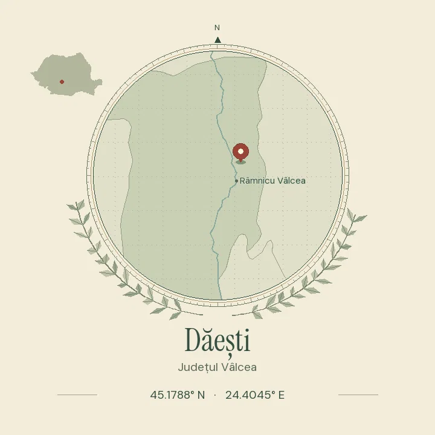
Hartă ilustrată Dăești · Bed & Breakfast
Conacul Domnitei
Conacul Domnitei. Pădurea și pășunea din jurul Conacului Domniței i-au rămas în minte unui oaspete, care descrie locul ca retras de agitația orașului.
Sinbotin, str. Principala, nr. 250, 240510 Dăești+40 753 352 789Hartă ilustrată Râmnicu Vâlcea · Hotel
Hotel Miraj
Hotel Miraj, Râmnicu Vâlcea. Parcarea subterană de la Miraj a contat pentru un oaspete care descrie și liftul cu acces din parcare.
Aleea Castanilor 3C, 240173 Râmnicu Vâlcea+40 350 800 702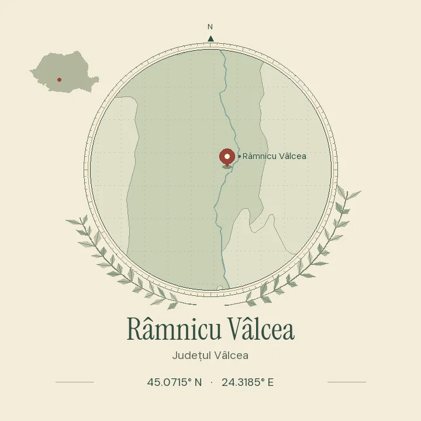
Hartă ilustrată Râmnicu Vâlcea · Pensiune
Andrei Râmnicu-Vâlcea
Andrei Râmnicu-Vâlcea. La pensiunea Andrei din Râmnicu Vâlcea, oaspetele care povestește despre camere menționează și o bucătărie comună la subsol.
Drumul Gării 2A, 240431 Râmnicu Vâlcea+40 726 756 525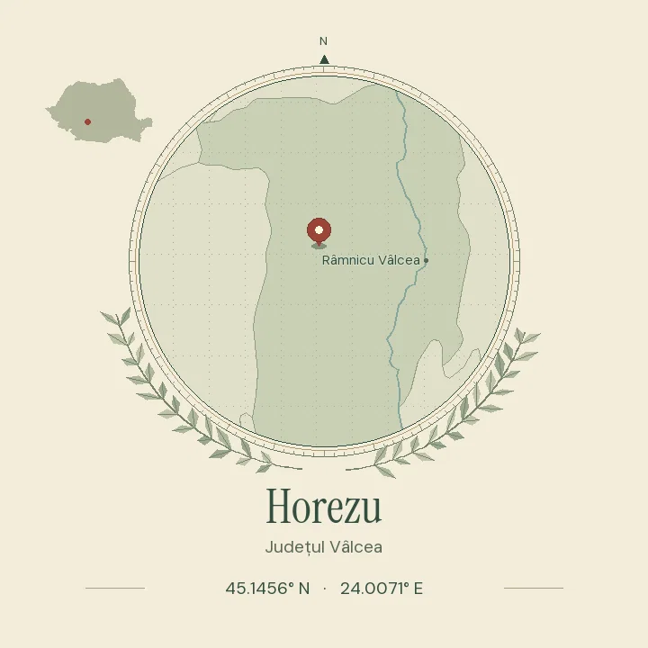
Hartă ilustrată Horezu · Bed & Breakfast
Conacul Paloși
Casă tradițională în Horezu cu grădină de flori, foișor alb și livadă; cazare de la 300 de lei pe noapte. Ce să întrebi pentru o petrecere mică.
Strada ulmului nr 35, 245800 Horezu+40 752 953 877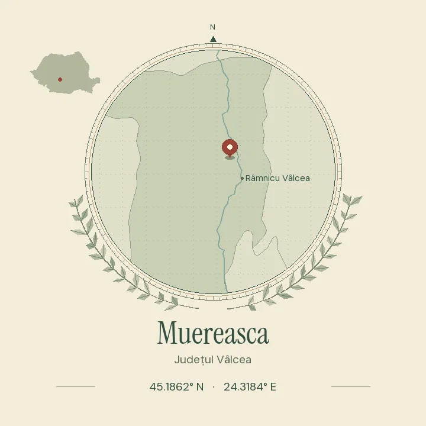
Hartă ilustrată Muereasca · Hotel
Conacul Pelerinului
Conac restaurat în Muereasca, Vâlcea, administrat de o familie și lăudat pentru mesele gătite în casă. Date puține: ce să întrebi pentru o petrecere.
DJ658, 247405 MuereascaFotografie a locației · Sursa fotografiei Râmnicu Vâlcea · Hotel
Grand Hotel Sofianu
Hotel cu salon de până la 400 de persoane, spa și piscină interioară pe Știrbei Vodă, în Râmnicu Vâlcea. Ce semnalează oaspeții și ce să verifici.
Strada Știrbei Vodă 9, 240184 Râmnicu Vâlcea+40 350 431 697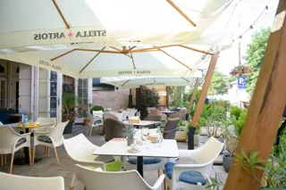
Fotografie a locației · Sursa fotografiei Râmnicu Vâlcea · Hotel
Castel
Hotelul Castel din centrul Râmnicului Vâlcea: restaurant cu terasă, parcare proprie și mic dejun bogat. Ce să verifici pentru o petrecere.
Strada General Praporgescu 5, 240595 Râmnicu Vâlcea+40 250 730 003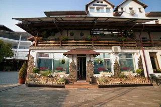
Fotografie a locației · Sursa fotografiei Râmnicu Vâlcea · Hotel
Pensiunea Relax Valcea
Pensiunea Relax Valcea. Pentru o ceremonie aici, cere să ți se arate ce foișor ar reveni grupului și dacă celelalte ar rămâne disponibile altor clienți.
Bulevardul Tudor Vladimirescu 43 A, 240168 Râmnicu Vâlcea+40 743 631 936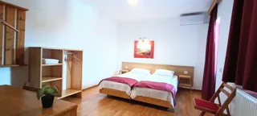
Fotografie a locației · Sursa fotografiei Râmnicu Vâlcea · Bed & Breakfast
Pensiunea Bulevard
Pensiunea Bulevard, Râmnicu Vâlcea. La vizită, pornește de la sala de mic dejun pentru a vedea dacă ar putea găzdui și o reuniune privată a doua zi.
Bulevardul Tudor Vladimirescu 43, 240042 Râmnicu Vâlcea+40 748 299 636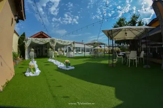
Fotografie a locației · Sursa fotografiei Râmnicu Vâlcea · Pensiune
Pensiune Valentina
O vizitatoare la Valentina povestește că prima impresie de la stradă s-a schimbat abia când a intrat și a descoperit grădina de vară cu piscină.
Strada Libertății 34, 240451 Râmnicu Vâlcea+40 350 417 250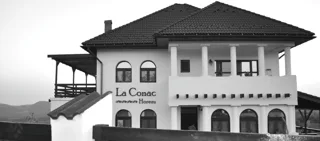
Fotografie a locației · Sursa fotografiei Horezu · Cazare
La Conac
La Conac în Horezu, un oaspete spune că își putea lua o carte în grădină și alege între hamac și șezlong la umbră.
Strada Olari 193, 245800 Horezu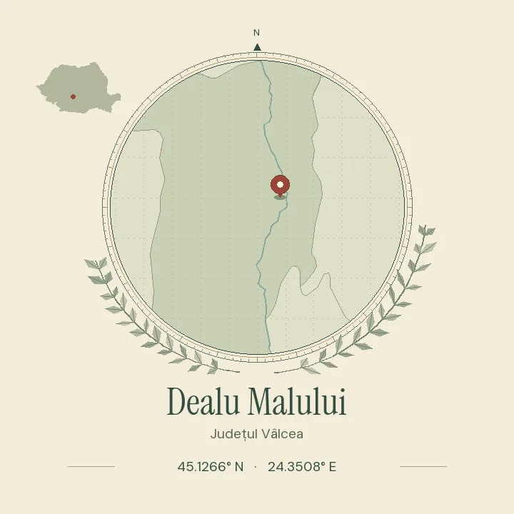
Hartă ilustrată Dealu Malului · Hotel
Conacul Malul Alb, vila turistica 5 stele
Vilă vintage în Dealu Malului, Vâlcea, cu galerie cu arcade, cramă și curte mare; 4,3 din 117 de evaluări. Cere condițiile în scris.
Strada Dealu Malului 76H, 240424 Dealu Malului+40 722 405 065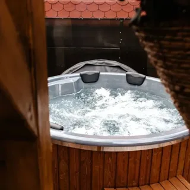
Fotografie a locației · Sursa fotografiei Râmnicu Vâlcea · Pensiune
Pensiunea Arthur
Pensiunea Arthur. Pentru doi călători ajunși după un drum lung la Arthur, gazdele au pregătit cafea și i-au ajutat să comande de mâncare.
Strada Oltului 4, 245900 Râmnicu Vâlcea+40 745 255 241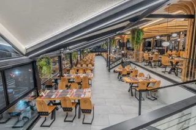
Fotografie a locației · Sursa fotografiei Căciulata · Hotel
Complex Turistic Casa Românească
Hotel cu spa în Căciulata, cu terasă vitrată de circa 160 de locuri; 4,3 din 8.148 de evaluări și critici recente la bucătărie.
Calea lui Traian nr. 803, 245601 Căciulata+40 786 720 720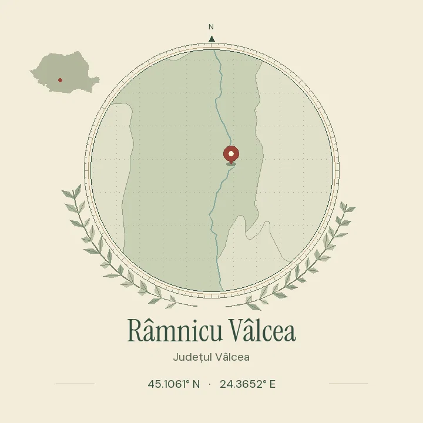
Hartă ilustrată Râmnicu Vâlcea · Restaurant cu bar
ok castel restaurant & wine pub
ok castel restaurant & wine pub. Un client de la OK Castel afirmă că disponibilitatea bufetului suedez depindea de existența unor oaspeți cazați.
Strada General Praporgescu nr 5, 240595 Râmnicu Vâlcea+40 250 735 050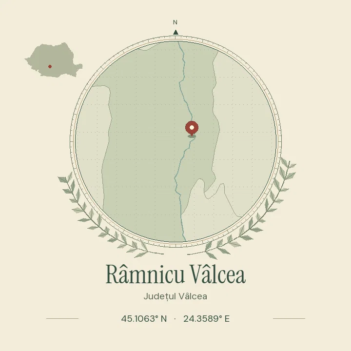
Hartă ilustrată Râmnicu Vâlcea · Hotel
Hotel Panoramic
Hotel Panoramic. Pentru invitații care ajung după petrecere, cereți din timp confirmarea categoriei de cameră și a procedurii de preluare a cheilor.
Strada Colonel Bădescu 20, 240174 Râmnicu Vâlcea+40 350 402 032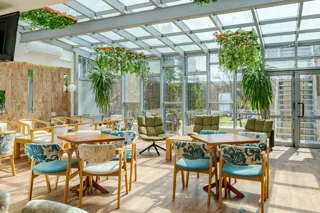
Fotografie a locației · Sursa fotografiei Căciulata · Hotel
Hotel Oltul
Hotel Oltul, Căciulata. Un client al Hotelului Oltul descrie un sejur care a combinat mic dejun, proceduri și acces la piscină.
Calea lui Traian 910, 912-914, 245601 Căciulata+40 250 750 280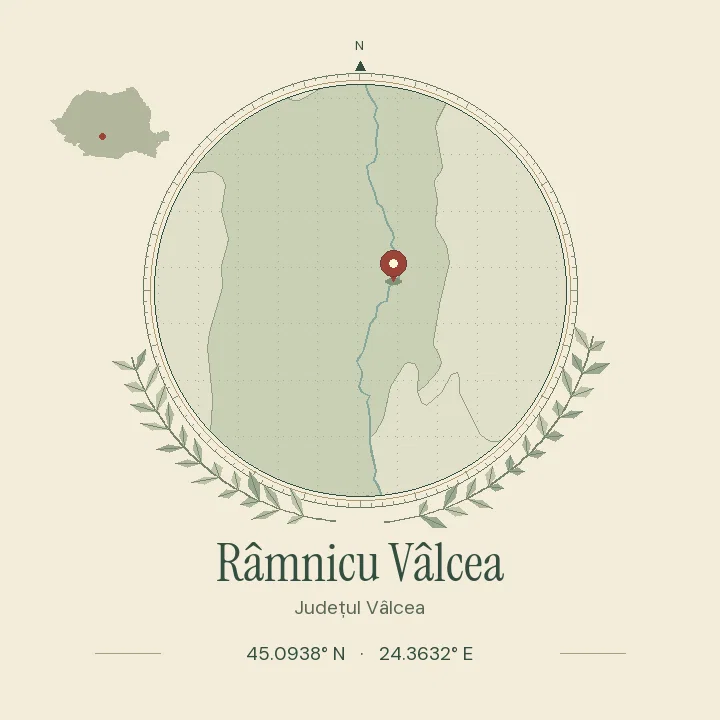
Hartă ilustrată Râmnicu Vâlcea · Pensiune
PENSIUNE SUPCA
PENSIUNE SUPCA. Un vizitator situează pensiunea Supca într-un cartier de case și amintește atât parcarea proprie, cât și faptul că unele camere aveau balcon.
Strada Petrache Poenaru 1, 240083 Râmnicu Vâlcea+40 250 713 857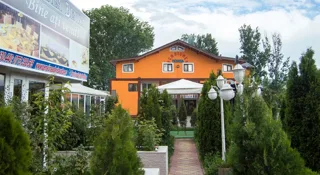
Fotografie a locației · Sursa fotografiei Râmnicu Vâlcea · Hotel
Pensiunea Denisa
Pensiunea Denisa, Râmnicu Vâlcea. Când mergeți să vedeți sala de evenimente, cereți și acces în camerele părinților.
Strada Ostroveni 99, 240030 Râmnicu Vâlcea+40 771 609 867
Întrebări despre locațiile din județul Vâlcea
Unde pot dormi invitații în județul Vâlcea?
În registrul de cazare SITUR găsim Simfonia Boutique Hotel (72 de locuri de cazare), Hotel Miraj (49 de locuri de cazare), Andrei Râmnicu-Vâlcea (10 locuri de cazare). Verifică ce camere sunt libere pentru noaptea evenimentului.
Ce proprietăți din județul Vâlcea au grădină sau terasă?
Pensiunea "Avântul SCM" (terasă); Simfonia Boutique Hotel (terasă); Bujorul Oltului (foișor). Cere administratorului condițiile de folosire pentru o petrecere privată.
Care locație din județul Vâlcea are cele mai multe evaluări Google?
Complex Turistic Casa Românească are 8.148 de evaluări în profilul Google folosit la documentare. Evaluările acoperă și alte experiențe la proprietate, inclusiv vizitele fără eveniment.
Unde apare o intrare accesibilă în județul Vâlcea?
Profilurile Google indică o intrare accesibilă la ok castel restaurant & wine pub. Pentru o cununie în exterior, cere detalii despre traseul dintre intrare și zona cu scaune.